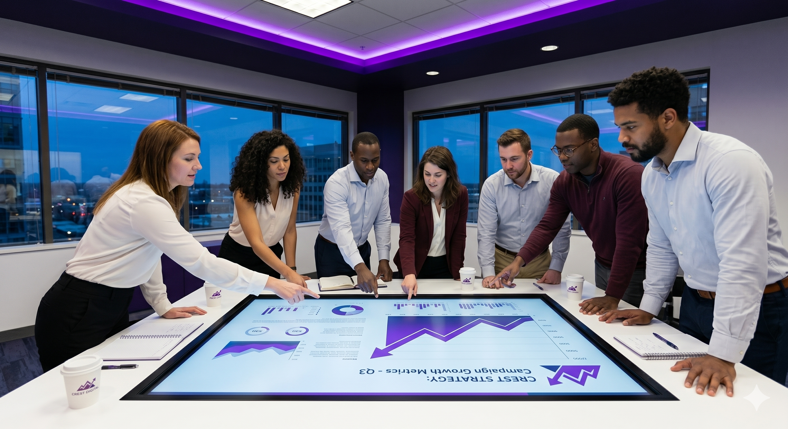

About Crest Digital
We are a creative digital team helping businesses and personal brands grow through social media, video content, design, and marketing strategy.

Who We Are
Crest Digital is a team of six students working together across different locations. In Ottawa, we have three designers and videographers who meet directly with clients, understand their needs, and create visual content for their brands.
Our coding team works from different countries. We have one coder in the United Kingdom and two coders in Turkey. They help with website structure, digital systems, and technical parts of our projects.
By staying organized and communicating regularly, we are able to accept different types of projects and complete them in the best way we can. Our goal is to make every client look professional and active online.
Our Mission
Our mission is to carry the social media workload for individuals and businesses. We help with planning, filming, editing, posting, and promoting content so our clients can focus on their own work.
Creative Work
We create social media content, videos, and digital visuals that match each brand.
Team Communication
We work as a connected team even when our members are in different countries.
Client Focus
We communicate directly with clients and try to understand what their business needs.